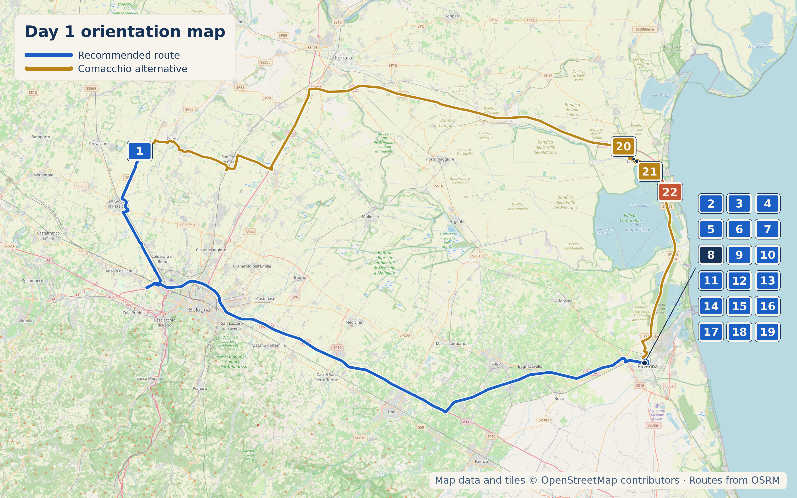

.jpg)
Overview
Compact, walkable historic centre — park once, do everything on foot. 13 September 2026 is a Sunday — several Ravenna businesses below have reduced Sunday hours, noted individually.

Stops

- Why stop: The single best mosaic room in Italy — Galla Placidia's 5th-century starry-night ceiling predates San Vitale's 6th-century Byzantine court scenes. Together they anchor Ravenna's eight UNESCO listings. Entry to Galla Placidia is strictly timed (~5 min/person) — expect a short queue.
- Time required: 1.5–2 hours for both
- Worth the detour: Yes — non-negotiable
- Parking: Paid lots ring the centre; walk in, mostly pedestrianised
- Approx cost: €12.50 cumulative ticket (covers 5 sites)
- Hours: 9:00am–7:00pm daily (San Vitale), 9:00am–6:30pm daily (Galla Placidia)
- Why stop: The civic heart of the city since the 13th century, plus the grave of a man Florence has spent 700 years trying to get back.
- Time required: 30–45 min
- Hours (Tomb): 10:00am–6:00pm daily
- Why stop: Underground late-antique residence with over 400 m² of 5th–6th-century polychrome floor mosaics, including the "Danza dei Geni delle Quattro Stagioni." Discovered in 1993 beneath the church and recognised as one of Italy's significant recent archaeological finds.
- Time required: 30–45 min
- Worth the detour: Yes — genuinely adjacent to San Vitale, with floor mosaics distinct from Ravenna's apse/wall mosaics.
- Why stop: Reopened November 2024 after major restoration, with 24 rooms across 2,220 m². Byron lived here in 1820–1821, wrote part of Don Juan here, and the palazzo carries a deep Risorgimento/Carbonari thread.
- Time required: 45–75 min
- Why stop: A small lagoon town nicknamed "Piccola Venezia" — pastel canal houses lining the Pallotta canal, crossed by the Ponte dei Trepponti, a five-arm stone staircase bridge built in 1634 where the canal splits into four. The 17th-century Antica Pescheria sits right beneath it.
- Time required: 45–75 min for a walk through the centro storico
- Worth the detour: Only via the Comacchio route choice — this and the Manifattura dei Marinati below are the real reason to take it over the direct route across the plain.
- Why stop: A working eel-curing and smoking operation tied to centuries of Comacchio lagoon fishing, now a museum inside the original processing sheds. Entry includes a free daily tasting of marinated eel with a glass of wine — a genuine local speciality, not a gift-shop version.
- Time required: 45–60 min
- Approx cost: €7 full / €5 reduced (over-65s, ages 11–17, groups 25+)
- Hours: 9:30am–1pm & 3–6:30pm most months; shorter winter hours and closed Sun–Mon Nov–Feb — check before committing to the detour outside Mar–Oct
- Why stop: A narrow ~5.5 km path built directly over the lagoon water — Le Figaro rated it among Italy's most scenic cycle routes. Flamingo colonies feed along it in the hundreds, sometimes just metres away, with no boat tour or booking needed, unlike the gated inner Salina di Comacchio where they nest.
- Time required: 30–60 min on foot from the near end and back; longer by bike
- Practical note: Access is time-gated — open 7:30am–8pm, 20 March to 20 September only; closed outside that window. Bring binoculars or a long lens — the birds' exact position shifts daily with feeding.
Coffee
Historic café on Ravenna's main square, part of the city's civic memory since the early 1900s. Owner Franco Scarfati won the national "Top Quality" silver award at Italy's Migliori Dolci d'Italia in 2019.
Pasticceria
Founded 1864 by a Venetian family, run by the Baccarini family since 1964. Gambero Rosso–listed, awarded a torta rating in 2017. 4.4★/535 reviews. 160 continuous years under two families, not a rebrand.
Lunch
4.4★/5,742 reviews — inside a 15th-century palazzo (the Rasponi family's Domus Magna), unpretentious Romagna cooking.
4.7★/999 reviews — higher-rated than Ca' de Vën. Family-run since 1909 in a former coaching inn dating to 1866, Liberty-era stained glass, garden view. Reservations essential.
Local Speciality & What to Buy
Piadina — flatbread filled with squacquerone (soft local cheese), rucola, prosciutto crudo. Cappelletti in brodo on a cool morning. Buy a bottle of Romagna Sangiovese and squacquerone or Mora Romagnola salami from Mercato Coperto stalls.

Hidden Gem
Origins trace to medieval fish and drapery markets. The 1918 building has exposed brick and Istrian marble, officially recognised in 2008. Dedicated salumeria, pescheria, and a fresh-pasta stall.
Cool, Interesting & Quirky
A menu, not an itinerary — use what fits the day.
4.9★/113 reviews. A real working bottega — founded by Luca Barberini and Arianna Gallo, collaborates with leading Italian mosaic masters. Closed Sundays except by arrangement.
Jeweller/watchmaker since 1895, fifth generation, original goldsmithing tools on display. Minted the medal for the 1904 Romagna Exposition.
1888 herbalist/apothecary, fourth generation.
Confectionery/wine shop founded in 1957 by brothers Sergio and Leonardo with wives Flavia and Nives, winner of Italy's "tavoletta d'oro" award for best chocolate assortment. Has an interior courtyard for tasting purchases.
Urban craft brewery in a restored industrial warehouse, brewing on-site since 2020 with the production plant visible in the middle of the pub. Guided tours run every two Mondays at 18:30 (€15, tour + tasting + tagliere + gadget) — biweekly, not weekly.
Accommodation
1600s palazzo built by the Rasponi-Bonanzi family, frescoed ceilings. My pick — matches the Bassano benchmark of character over polish.
Today's Route & Timing
Organic Maps route legs (POIs remain visible)
Import Day 4 POIs once, then open each leg in order. The Google buttons above retain the complete route as a fallback.
Recommended Route:
Optional stop maps: Comacchio Google Manifattura dei Marinati Google Argine degli Angeli Google
Print timing summary: suggested 9:00am departure. Base direct day is approximately 6h45–7h15, finishing around 3:45–4:15pm. Comacchio alternative adds about 3–3.5 hours. Domus adds 30–45 minutes; Byron adds 45–75 minutes; mosaic atelier adds 45–60 minutes. Under 8 hours is a comfortable day; 8–10 hours is a long day; over 10 hours is a very long day and a sign to drop an option.
Day 4 route map

Numbered points of interest
- San Matteo della Decima StartSan Matteo della Decima, 40017 San Giovanni in Persiceto BO, Italy
GPS: 44.7100177, 11.2283615 - Largo Giustiniano Parking ParkingLargo Giustiniano, 48121 Ravenna RA, Italy
GPS: 44.42183, 12.19623 - Basilica di San Vitale Historic siteVia San Vitale 17, 48121 Ravenna RA, Italy
GPS: 44.4205557, 12.1963864 - Mausoleo di Galla Placidia Historic siteVia Giuliano Argentario 22, 48121 Ravenna RA, Italy
GPS: 44.4209827, 12.1971029 - Domus dei Tappeti di Pietra Historic siteVia Gian Battista Barbiani 16, 48121 Ravenna RA, Italy
GPS: 44.421223, 12.195474 - Museo Byron e del Risorgimento, Palazzo Guiccioli MuseumVia Camillo Benso Cavour 54, 48121 Ravenna RA, Italy
GPS: 44.419629, 12.197836 - Pasticceria Veneziana Food stopVia Salara 15, 48121 Ravenna RA, Italy
GPS: 44.4194468, 12.1982703 - B&B Casa Masoli AccommodationVia Girolamo Rossi 22, 48121 Ravenna RA, Italy
GPS: 44.4199737, 12.2003868 - Erboristeria Giorgioni ShopVia IV Novembre 43, 48121 Ravenna RA, Italy
GPS: 44.4188773, 12.1994528 - Mercato Coperto Food stopPiazza Andrea Costa 6, 48121 Ravenna RA, Italy
GPS: 44.418912, 12.199129 - Gioielleria Lugaresi ShopVia Giacomo Matteotti 12, 48121 Ravenna RA, Italy
GPS: 44.4179545, 12.1986896 - Caffè Il Nazionale Food stopPiazza del Popolo 28, 48121 Ravenna RA, Italy
GPS: 44.4175944, 12.1995888 - Piazza del Popolo Historic sitePiazza del Popolo, 48121 Ravenna RA, Italy
GPS: 44.4177596, 12.1993185 - Leonardi Dolciumi 1957 ShopVia Pellegrino Matteucci 5, 48121 Ravenna RA, Italy
GPS: 44.417228, 12.200015 - Tomba di Dante Historic siteVia Dante Alighieri 9, 48121 Ravenna RA, Italy
GPS: 44.4161585, 12.2009368 - Ca' de Vën Food stopVia Corrado Ricci 24, 48121 Ravenna RA, Italy
GPS: 44.4160938, 12.1999840 - Koko Mosaico Optional stopVia di Roma 136, 48121 Ravenna RA, Italy
GPS: 44.416945, 12.2039917 - Antica Trattoria Al Gallo 1909 Food stopVia Maggiore 89, 48121 Ravenna RA, Italy
GPS: 44.4207825, 12.1915981 - Darsenale - Bizantina Brewpub Optional food stopVia D'Alaggio 69, 48122 Ravenna RA, Italy
GPS: 44.423296, 12.212171 - Comacchio Optional stopCentro storico, 44022 Comacchio FE, Italy
GPS: 44.6958712, 12.1812500 - Manifattura dei Marinati Museum / food heritageCorso Giuseppe Mazzini 200, 44022 Comacchio FE, Italy
GPS: 44.6990038, 12.1752748 - Argine degli Angeli ViewpointArgine degli Angeli, Valli di Comacchio, 44029 Comacchio FE, Italy
GPS: 44.6540, 12.2450
OpenStreetMap-derived orientation map only, not turn-by-turn navigation. Import this day’s POIs once to keep its bookmark pins visible in Organic Maps navigation. Use the Organic Maps route legs above for POI-visible navigation; Google Maps remains the complete-route fallback.
🏆 Today's Winners
Road Trip Score
| Category | Rating |
|---|---|
| Food | ★★★★☆ |
| Coffee | ★★★☆☆ |
| Atmosphere | ★★★★★ |
| Photography | ★★★★★ |
| History | ★★★★★ |
| Young Traveller Appeal | ★★★☆☆ |
| Worth Detour | ★★★★★ |
.jpg)

%20-%20Facade.jpg)